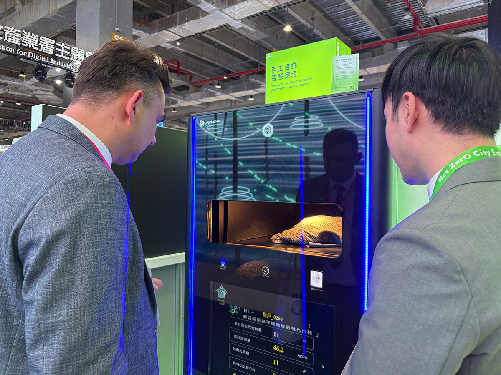
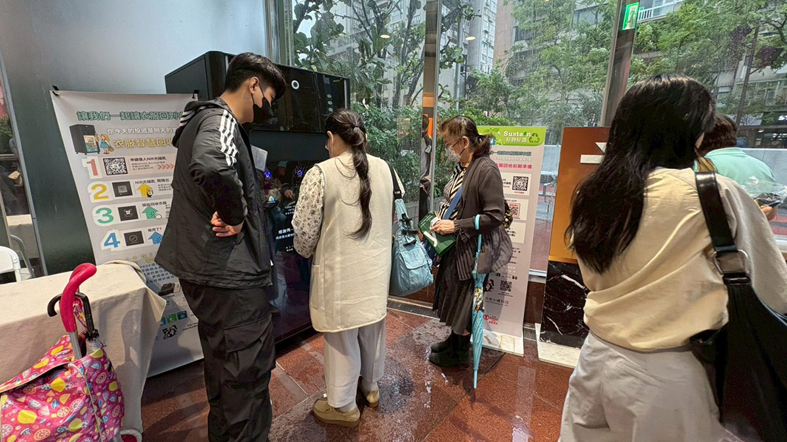
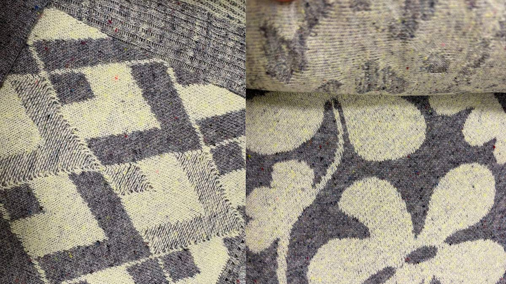
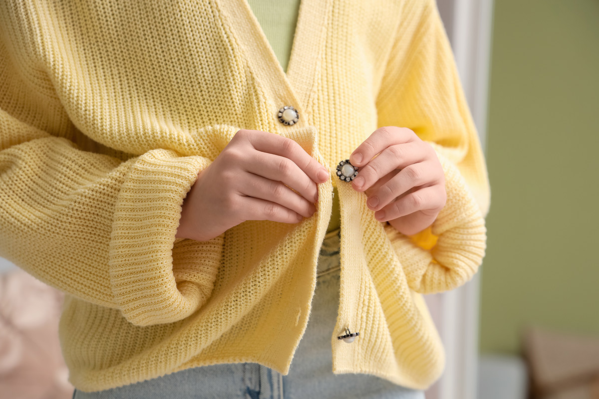
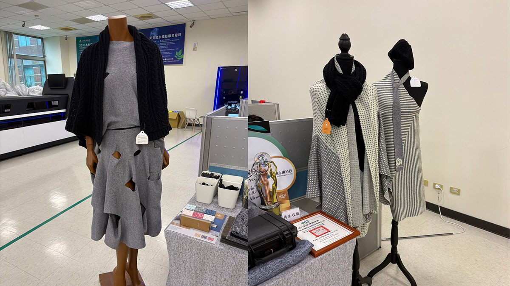

◎ 報導／黎育如
◎ 圖片來源／沛德永續科技・達志影像Shutterstock
◎ 發布日期／2026.08.20

百貨公司引進智能回收機，民眾只要把毛衣放進機器，就能辨識衣物材質；螢幕很快跳出意想不到的結果：壓克力纖維。
原以為是羊毛，結果卻是一種塑膠。類似的驚訝，也出現在尼龍、聚酯等日常衣物上。許多人直到機器辨識後才發現，衣櫃裡柔軟、保暖或排汗的衣服，可能都與石化原料有關。
這台由「沛德永續科技」開發的智慧衣物回收機，利用AI與近紅外光譜技術，辨識多樣的混紡材質。2025年他們與SOGO百貨合作活動，兩天收到超過1萬2千件衣服，約有兩千多人次參與。
機器的新奇感讓舊衣回收不只是「把衣服丟進箱子」。沛德永續科技執行長劉曜達表示，很多人不知道尼龍、聚酯和壓克力都屬於塑膠，當消費者理解衣服由什麼製成，才可能進一步意識到衣物被隨意丟棄後的環境負擔。
但一台能辨識材質的機器，還無法解決台灣的舊衣問題。它更像是一個入口，讓人看見舊衣離開衣櫃後，還有一條漫長且經常中斷的路。
舊衣丟進回收箱，為什麼還不算循環？過去台灣的舊衣回收，主要建立在「延長穿著」上。回收商或社福團體收到衣物後，挑出衣況較好的部分，用於義賣、捐贈或出口海外。
然而，快時尚帶來大量便宜、淘汰快速的新衣，流入回收端的衣物愈來愈多，二手市場卻未必能全部吸收；部分海外市場也開始限制二手衣進口，讓依靠出口的模式更加困難。
挑選二手衣時，不必太在意衣服究竟是棉、羊毛或聚酯；但若要將舊衣重新製成纖維，不同材質就必須分開處理。

▲ 民眾前來使用智能回收，認識衣服的材質。（圖片來源／沛德永續科技提供）
「沒有做分類，就沒辦法做更好的去化利用。」劉曜達說，棉、羊毛、尼龍及聚酯，各有不同的再生方式與下游工廠。材質混在一起，即使品牌想使用舊衣再生料，也很難取得成分穩定、數量足夠的原料。
在百貨現場，智能回收機受限於體積，目前只能先將主要回收的聚酯分成一類，其餘衣物再送往工廠進一步辨識。這道分選程序，是舊衣從「不要的衣服」變成「可使用原料」的第一關。
只是分得出來，不代表有可以持續接力利用的地方。
台灣化纖產業完整，聚酯衣物分選後，可送入化學回收製程，再製成接近原生品質的材料。近年國際市場也逐漸強調「瓶回瓶、衣回衣」（或瓶到瓶，衣到衣），各自的材質回到各自材質的循環。
問題是舊衣不只有聚酯，當化纖廠主要需求集中在聚酯，棉、羊毛與混紡材料即使被分選出來，也可能缺少去處。
為此，沛德投入物理解纖，將衣物裁切、拆散成纖維，再製成紡紗。團隊花費約兩年調整製程，目前已製作數批再生紗線，並與實踐大學服裝設計團隊合作，完成20多套服裝。

▲ 由回收衣服製成再生紗線。（圖片來源／沛德永續科技提供）
不過，舊衣重新拆解後，纖維會變短，強度與用途也會受到限制，未必適合高機能或高度親膚的衣物。循環紡織真正要處理的，不是宣稱每件舊衣都能原封不動變回新衣，而是依照材料品質，找到合理的下一個用途。
舊衣要重新成為紗線，必須經過收集、分選、拆除鈕釦拉鍊、裁切、解纖及紡紗。當這些環節分散在不同場域，不只成本增加，任何一段找不到合作業者，整條循環就可能中斷。
這也是為何沛德規畫興建位在台南的工廠。劉曜達表示，希望把大型分選、破碎與解纖集中在同一場域，並串接鄰近紗線廠，讓各地回收的衣物進廠後，能依材質分類並轉成紡紗原料，形成「衣服進來、紗線出去」的流程。
這項規畫試圖解決的，不只是處理速度，而是舊衣缺乏穩定去處的問題。但從少量示範走向大量商業運作，仍有成本、產能與市場需求要驗證。
目前再生紗線成本仍高，沛德希望規模化後，將價格控制在原生材料的1.5倍以內。就連看似不起眼的鈕釦與拉鍊，也是成本來源，目前仍需人工剪除。
劉曜達認為，未來或許能與社福團體合作，將部分處理轉化為身心障礙者等服務對象的工作機會，循環不只是科技題，誰負責額外勞動、成本由誰承擔，也要一起被討論。

▲ 衣服回收後，還需人工拆除配件、鈕釦等外加材料。（圖片來源／達志影像Shutterstock）
當舊衣能被辨識、分選、解纖並重新紡成紗線，循環還差最後一段，就是留下可被查驗的紀錄。
過去民眾把衣服投入回收箱後，通常不知道它被送往何處；品牌宣稱產品使用20％再生纖維時，消費者也很難確認材料究竟來自舊衣、寶特瓶，還是其他來源。
因此，沛德同步建置雲端履歷，記錄衣物從哪個回收點出發、送往哪個分選場域，以及回收件數與材質比例。未來若再串接解纖、紡紗及製造資訊，就能證明一批再生紗線確實來自特定時間與場域回收的舊衣。
劉曜達形容，這是在補上產品履歷的另一個半圓。一般產品履歷記錄原料如何成為衣服；舊衣循環則要反向追蹤，一件衣服如何被拆回原料，再進入下一次生產。
唯有這些資訊能被持續揭露，數位履歷才不只是漂亮的永續報表，而是判斷循環是否成立的依據。
技術之外，循環紡織最大的阻力，或許仍是市場習慣。不少人直覺認為，回收材料代表品質較差、價格也應該更便宜。但舊衣必須額外經過收集、拆解、分選和再製，成本往往高於直接使用原生原料。
劉曜達表示，即使已有檢測資料顯示，部分再生紗線品質可接近原生材料，許多代工廠仍傾向等待品牌提出需求。「品牌沒有要求，為什麼要使用？」是他在推廣時經常遇到的回應。

▲ 使用再生紗線設計出來的衣物款式，未來循環紡織也會是競爭力的決勝點。（圖片來源／沛德永續科技提供）
這也揭露出台灣循環紡織的矛盾。台灣擁有從化纖、紡紗、織布、染整到成衣的完整供應鏈，也具備發展衣到衣循環的條件；但若每個環節都等待下一張訂單，新材料便難以累積產量、降低成本，更難形成市場。
對消費者而言，循環行動也不只是把舊衣交出去。理解衣服材質、延長穿著時間、接受再生材料未必更便宜，並要求品牌說清楚來源與去向，都是市場轉變的一部分。
在百貨裡的智能回收機，可以在幾秒內告訴人們一件毛衣是羊毛還是塑膠。但台灣真正需要辨認的，是一件衣服離開衣櫃後，究竟只是換一個地方堆積，還是真的回到下一件衣服裡。從回收、分選到再生，每一段都接得起來，循環才不會只停留在投遞的那一刻。


新聞部
副總經理 王結玲
陳致中・陳詩璧・胡瑞麒・華子琛・談雍雍・吳家瑜
節目部
T觀點／莊開文・吳家瑋・莊秀惠・趙昱涵
數位事業部
總監 郭瀧億
內容策展組／廖玉貞・彭嘉儀・林佳瑤・李佳綺
ESG永續發展部
賴盈文・蔣成偉・張玲玲・黎育如・徐新瑜

© TVBS Media Inc. All Rights Reserved｜聯利媒體股份有限公司